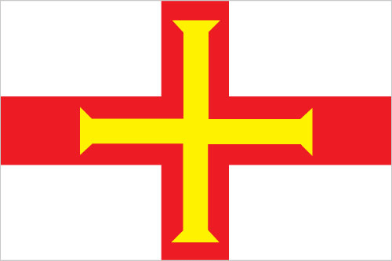

Europe :: GUERNSEY
Introduction :: GUERNSEY
-
Guernsey and the other Channel Islands represent the last remnants of the medieval Dukedom of Normandy, which held sway in both France and England. The islands were the only British soil occupied by German troops in World War II. The Bailiwick of Guernsey is a British crown dependency but is not part of the UK or of the EU. However, the UK Government is constitutionally responsible for its defense and international representation. The Bailiwick of Guernsey consists of the main island of Guernsey and a number of smaller islands including Alderney, Sark, Herm, Jethou, Brecqhou, and Lihou.
Geography :: GUERNSEY
-
Western Europe, islands in the English Channel, northwest of France49 28 N, 2 35 WEuropetotal: 78 sq kmland: 78 sq kmwater: 0 sq kmnote: includes Alderney, Guernsey, Herm, Sark, and some other smaller islandscountry comparison to the world: 228about one-half the size of Washington, DC0 km50 kmterritorial sea: 3 nmexclusive fishing zone: 12 nmtemperate with mild winters and cool summers; about 50% of days are overcastmostly flat with low hills in southwestmean elevation: NAelevation extremes: lowest point: English Channel 0 mhighest point: Le Moulin on Sark 114 mcroplandNAvery large tidal variation and fast currents can make local waters dangerouscoastal erosion, coastal flooding; declining biodiversity due to land abandonment and succession to scrub or woodlandlarge, deepwater harbor at Saint Peter Port
People and Society :: GUERNSEY
-
66,502 (July 2017 est.)country comparison to the world: 204noun: Channel Islander(s)adjective: Channel IslanderBritish and Norman-French descent with small percentages from other European countriesEnglish, French, Norman-French dialect spoken in country districtsProtestant (Anglican, Presbyterian, Baptist, Congregational, Methodist), Roman Catholic0-14 years: 14.51% (male 4,984/female 4,665)15-24 years: 11.13% (male 3,780/female 3,620)25-54 years: 41.67% (male 13,995/female 13,719)55-64 years: 13.11% (male 4,332/female 4,387)65 years and over: 19.58% (male 5,929/female 7,091) (2017 est.)total dependency ratio: 47.1youth dependency ratio: 21.6elderly dependency ratio: 25.4potential support ratio: 3.9note: data represent the Guernsey and Jersey (2015 est.)total: 43.8 yearsmale: 42.5 yearsfemale: 45.1 years (2017 est.)country comparison to the world: 150.3% (2017 est.)country comparison to the world: 1769.8 births/1,000 population (2017 est.)country comparison to the world: 1969 deaths/1,000 population (2017 est.)country comparison to the world: 652.2 migrant(s)/1,000 population (2017 est.)country comparison to the world: 44urban population: 31.7% of total population (2017)rate of urbanization: 0.86% annual rate of change (2015-20 est.)note: data are for Guernsey and Jerseyat birth: 1.05 male(s)/female0-14 years: 1.07 male(s)/female15-24 years: 1.04 male(s)/female25-54 years: 1.02 male(s)/female55-64 years: 0.99 male(s)/female65 years and over: 0.83 male(s)/femaletotal population: 0.99 male(s)/female (2016 est.)total: 3.4 deaths/1,000 live birthsmale: 3.7 deaths/1,000 live birthsfemale: 3.1 deaths/1,000 live births (2017 est.)country comparison to the world: 206total population: 82.6 yearsmale: 79.9 yearsfemale: 85.4 years (2017 est.)country comparison to the world: 91.56 children born/woman (2017 est.)country comparison to the world: 188NANANA
Government :: GUERNSEY
-
conventional long form: Bailiwick of Guernseyconventional short form: Guernseyetymology: the name is of Old Norse origin, but the meaning of the root "Guern(s)" is uncertain; the "-ey" ending means "island"British crown dependencyparliamentary democracy (States of Deliberation); a Crown dependency of the UKname: Saint Peter Portgeographic coordinates: 49 27 N, 2 32 Wtime difference: UTC 0 (5 hours ahead of Washington, DC, during Standard Time)daylight saving time: +1hr, begins last Sunday in March; ends last Sunday in Octobernone (British crown dependency); there are no first-order administrative divisions as defined by the US Government, but there are 10 parishes: Castel, Forest, Saint Andrew, Saint Martin, Saint Peter Port, Saint Pierre du Bois, Saint Sampson, Saint Saviour, Torteval, Valenote: two additional parishes for Guernsey are sometimes listed - the parish of Saint Anne on the island of Alderney and the parish of Saint Peter on the island of Sark - but they are generally not included in the enumeration of parishesnone (British crown dependency)Liberation Day, 9 May (1945)history: unwritten; includes royal charters, statutes, and common law and practiceamendments: new laws or changes to existing laws are initiated by the States of Deliberation; passage requires majority vote (2016)customary legal system based on Norman customary law, and includes elements of the French civil code and English common lawsee United Kingdom16 years of age; universalchief of state: Queen ELIZABETH II (since 6 February 1952); represented by Lieutenant Governor Vice Admiral Ian CORDER (since 14 March 2016)head of government: Chief Minister Gavin ST.PIER (since 6 May 2016); Bailiff Sir Richard COLLAS (since 23 March 2012); note - the chief minister is the president of the Policy and Resources Committee and is the de facto head of government; the Policy and Resources Committee, elected by the States of Deliberation, functions as the executive; the 5 members all have equal voting rightscabinet: noneelections/appointments: the monarchy is hereditary; lieutenant governor and bailiff appointed by the monarch; chief minister, who is the president of the Policy and Resources Committee indirectly elected by the States of Deliberation for a 4-year term; last held on 6 May 2016 (next to be held in 2020)election results: Gavin ST.PIER (independent) elected president of the Policy and Resources Committee and chief ministerdescription: unicameral States of Deliberation (40 seats; 38 People's Deputies and 2 representatives of the States of Alderney; members directly elected by majority vote to serve 4-year terms); note - non-voting members include the bailiff (presiding officer), attorney-general, and solicitor-generalelections: last held on 27 April 2016 (next to be held in 2020)election results: percent of vote - NA; seats - independent 38highest resident court(s): Guernsey Court of Appeal (consists of the Bailiff of Guernsey, who is the ex-officio president of the Guernsey Court of Appeal, and at least 12 judges); Royal Court (organized into 3 divisions - Full Court sits with 1 judge and 7 to 12 jurats acting as judges of fact, Ordinary Court sits with 1 judge and normally 3 jurats, and Matrimonial Causes Division sits with 1 judge and 4 jurats); note - appeals beyond Guernsey courts are heard by the Judicial Committee of the Privy Council (in London)judge selection and term of office: Royal Court Bailiff, Deputy Bailiff, and Court of Appeal justices appointed by the British Crown and hold office at Her Majesty's pleasure; jurats elected by the States of Election, a body chaired by the Bailiff and a number of juratssubordinate courts: Court of Alderney; Court of the Seneschal of Sark; Magistrate's Court (includes Juvenile Court); Contracts Court; Ecclesiastical Court; Court of Chief Pleasnone; all independentsStop Traffic Endangering Pedestrian Safety or STEPSUPUnone (British crown dependency)none (British crown dependency)white with the red cross of Saint George (patron saint of England) extending to the edges of the flag and a yellow equal-armed cross of William the Conqueror superimposed on the Saint George cross; the red cross represents the old ties with England and the fact that Guernsey is a British Crown dependency; the gold cross is a replica of the one used by Duke William of Normandy at the Battle of HastingsGuernsey cow, donkey; national colors: red, white, yellowname: "Sarnia Cherie" (Guernsey Dear)lyrics/music: George DEIGHTON/Domencio SANTANGELOnote: adopted 1911; serves as a local anthem; as a British crown dependency, "God Save the Queen" remains official (see United Kingdom)
Economy :: GUERNSEY
-
Financial services account for about 40% of employment and about 55% of total income in this tiny, prosperous Channel Island economy. Tourism, manufacturing, and horticulture, mainly tomatoes and cut flowers, have been declining. Financial services, construction, retail, and the public sector have been growing. Light tax and death duties make Guernsey a popular tax haven. In October 2014, Guernsey signed an OECD agreement to automatically exchange some financial account information to limit tax avoidance and evasion.$3.465 billion (2015 est.)$3.451 billion (2014 est.)$3.42 billion (2013 est.)note: data are in 2015 dollarscountry comparison to the world: 181$2.742 billion (2005 est.)0.4% (2015 est.)1.2% (2014 est.)4.2% (2012 est.)country comparison to the world: 184$52,500 (2014 est.)$52,500 (2014 est.)country comparison to the world: 22agriculture: 3%industry: 10%services: 87% (2000)tomatoes, greenhouse flowers, sweet peppers, eggplant, fruit; Guernsey cattletourism, bankingNA%31,470 (March 2006)country comparison to the world: 2041.2% (2016 est.)country comparison to the world: 9NA%lowest 10%: NA%highest 10%: NA%revenues: $563.6 millionexpenditures: $530.9 million (2005 est.)20.6% of GDP (2005)country comparison to the world: 1471.2% of GDP (2005)country comparison to the world: 20calendar year3.4% (June 2006 est.)country comparison to the world: 147$NAtomatoes, flowers and ferns, sweet peppers, eggplant, other vegetables$NAcoal, gasoline, oil, machinery, and equipment$NAGuernsey pound per US dollar0.738 (2016)0.738 (2015)0.6542 (2014)0.607 (2013)0.63 (2012)
Energy :: GUERNSEY
-
electrification - total population: 100% (2016)
Communications :: GUERNSEY
-
total subscriptions: 36,547subscriptions per 100 inhabitants: 60 (July 2016 est.)country comparison to the world: 165total: 71,249subscriptions per 100 inhabitants: 113 (July 2016 est.)country comparison to the world: 203domestic: fixed-line and mobile-cellular services widely availableinternational: country code - 44; 1 submarine cable (2015)multiple UK terrestrial TV broadcasts are received via a transmitter in Jersey with relays in Jersey, Guernsey, and Alderney; satellite packages are available; BBC Radio Guernsey and 1 other radio station operating (2009).ggtotal: 55,050percent of population: 83.3% (July 2016 est.)country comparison to the world: 185
Transportation :: GUERNSEY
-
number of registered air carriers: 2 (registered in UK)inventory of registered aircraft operated by air carriers: 11 (registered in UK) (2015)2 (2013)country comparison to the world: 200total: 21,524 to 2,437 m: 1under 914 m: 1 (2017)major seaport(s): Braye Bay, Saint Peter Port
Military and Security :: GUERNSEY
-
defense is the responsibility of the UK
Transnational Issues :: GUERNSEY
-
none